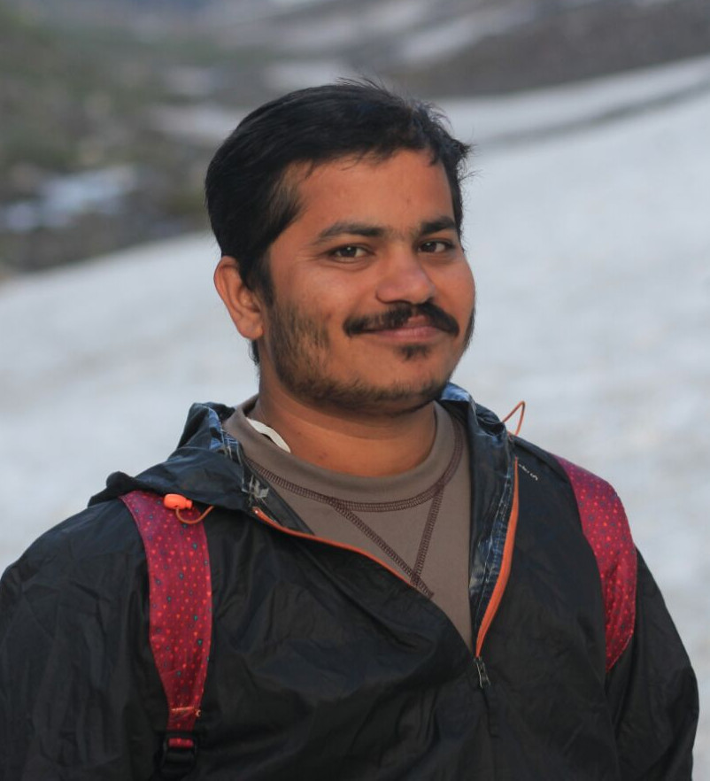

Sachin Kadam
Postdoctoral Research Scholar Wireless Communications Lab (WCL) College of Information and Communication Engineering Sungkyunkwan University (SKKU), Suwon-si, Republic of Korea - 16419 Email: skadam6.asu[at]gmail.com, sachinkadam[at]skku.edu Curriculum Vitae
Publications Academics Work Experience Adv. Hobbies Social Profiles